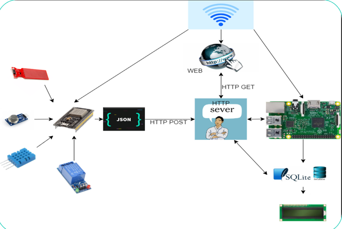
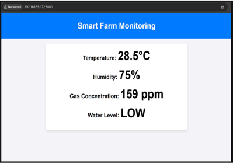

IoT Environmental Monitoring System
Using ESP32, gas sensors, and Raspberry Pi platform
Project Objectives
Design and implement a smart environmental monitoring system capable of collecting data from various sensors (temperature, humidity, toxic gas, water level), displaying it instantly on LCD, and sending it to a server for storage and remote access via a web interface.
System Components
- Endpoint Device: ESP32 with DHT11, MQ135, water level sensor
- Display Device: LCD1602 I2C
- Server: Raspberry Pi with SQLite & Mongoose
- User Interface: HTML, CSS, JS, AJAX
Operating Mechanism
The system coordinates hardware & software as follows:
- ESP32 collects sensor data → sends HTTP POST
- Raspberry Pi receives data via Mongoose → stores into SQLite
- LCD1602 displays latest local data
- Web accesses remotely using AJAX for real-time updates
- Remote Control: send /control queries to toggle devices
Achievements
- Stable data transmission, response time < 1 second
- User-friendly interface, easy to use
- Expandable with more sensor types
Illustration
Actual circuit:

Realtime web interface:
Demo Video
Last updated:
GitHub Link: View here